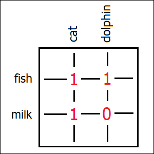

Large language models work by predicting the next word to be printed out. They cannot do this however without already possessing knowledge about everything what humans might expect them to say. This effectively encodes human culture in the form of the model’s parameters. Internal structure of neural networks essentially captures relations between different unnamed abstract concepts. Unlike information stored in books and other physical media, such a representation minimizes repetition, and in this way allows to change the entire structure by simply “rewiring” certain connections between such abstract concepts. This is reminiscent of the properties of DNA, which similarly encodes complicated algorithms and makes it possible to modify them by means of simple changes.
The real magic of large language models comes from the fact that you cannot correctly predict a suitable continuation for a phrase like “Theory of special relativity is” without having some real knowledge present in your head about what all these words might actually mean. Try it. The idea of predicting the next word is deceptively simple. But on the other hand, knowing how to make the next step is the only thing you need to know in your life, ever. Knowing the next step means understanding everything what happened before, and having a plan for anything yet to come.
Things which the model would need to “know” in order to be able to continue this phrase (and plan for a few steps ahead) include definitions of space and time, some basic information about Lorenz transformations and Galilean principle of relativity, as well as the general idea about how these concepts relate space and time together, including all the logic rules allowing to derive the formulas of the relativity theory from the basic principles. Besides, modern LLMs will also contain biographical data about Einstein, Lorenz and Galileo, and many other unrelated things.
None of these things is stored inside the model as “plain text”. Instead, neural networks store knowledge in the form of abstract ideas connected to other abstract ideas. If we examined the inner workings of a neural network that’s telling apart dogs from cats, we would find there, in one of its deeper layers, an abstract idea of “cat” being composed from its constituent parts, like a pair of eyes, whiskers and pointy ears. Whereas within a text-processing network, at one of its early stages, we might see a step which converts some very specific sequence of letters into a bunch of abstract concepts like “noun”, “given name”, “person” and “Einstein”. This step would have just discovered a person’s name mentioned directly inside the text. Another step might be able to correlate a pair of words like “relativity” and “theory” occurring close to each other, and produce another set of concepts as a result, like “scientific theory” and “Einstein”. Both of these paths would have led to the detection of the abstract idea of “Einstein”, but in very different ways. And once the network has seen this concept of “Einstein” light up, for whatever reason, it can go ahead and start the preparations for printing out his biographical data (if it can’t come up with anything better than that).
Each of the many layers within an artificial neural network will work with its own range of concepts and abstract ideas, specific to this particular layer (something which scientists also call the layer’s “semantic space”). In visual processing networks, such a space might contain things like different kinds of textures (in one of the earlier processing stages) or different “body parts” like muzzles, paws and tails (in a later stage). In text processing, earlier stages will be working with grammatical abstractions, like word boundaries, parts of speech, syntactical markers and punctuation marks. Middle stages will detect semantic concepts, of ever increasing complexity, that are either mentioned directly or implied in different parts of the text being processed. Whereas later stages will focus on what’s missing in the current sentence, either grammatically or semantically, as well as on possible ways to fill in this gap, either with the help of abstract ideas detected earlier or mentioned elsewhere in the text, or with the help of the network’s own knowledge about the world. And then the very latest step will come up with the desired prediction for the next word.
In Transformer architecture (which is the backbone of a typical LLM), this whole processing is performed in a highly parallel fashion. Which means that within any given layer, every “token” (a word or a part of it) will have its own individual concepts associated with it (even if all of them will still belong to the same semantic space specific to this particular layer). This is similar to how different pixels of an image will have different textures or different body parts associated with them in image-processing neural networks. Moving to a deeper processing layer will then amount to producing even more advanced concepts (specific to this deeper layer) by combining the concepts already available in the current one. (Data associated with every token inside the deeper layer will be formed by combining data entries originating from a bunch of tokens from the current one, picked according to certain matching rules discovered during the training process, which will quite often lead to collecting data associated with very remote areas of the original text).
The deepest of all layers will ultimately produce, for every token within the text (although this information is actually discarded for all the tokens except the very last one) what could be interpreted as a “probability distribution” for the tokens considered likely to follow it: a long list of numbers (one per every entry in the complete dictionary of all possible tokens) which will add up to 1. And then this tiny extra “manual” step is performed, which will break the perfectly deterministic nature of the LLM by selecting randomly the next token to be printed out, on the basis of this predicted “probability distribution”. This will complete the algorithm for coming up with the next word. And once we are able to produce this single word, the whole process can repeat indefinitely.
Any “knowledge” which this algorithm might possess about our world has to be encoded within its parameters, which are nothing more than a long list of numbers. It’s these numbers which ultimately describe the abstract concepts which our neural network might be aware of. However, all these countless parameters don’t name or identify any of these abstract ideas directly. Rather, they merely specify how different unnamed concepts are related to each other. A simplified example of such a relation could be a matrix (a large rectangular table of numbers) whose every row corresponded to a certain animal and every column corresponded to a certain animal body part. Inside the row dedicated to the animal “cat” we might see number “1” present in columns for body parts like “eyes”, “whiskers” and “pointy ears”, whereas number “0” would be written in all the remaining columns. And inside some other row, representing dolphins, we might find number “1” present in columns for “fish tail”, “fin” and “pointy nose” instead. And so on. And then inside some yet another matrix we might have columns mapped to animals and rows mapped to their habitats or favorite foods, and expect food “fish” to be mapped (with the number “1”) to both “cat” and “dolphin”, and “milk” to be mapped to cats exclusively.
Real-life examples are more complicated, and they will also contain other numbers along with “0” and “1”. Besides, most real-life abstract ideas won’t be represented by single dedicated rows (or columns), but rather by combinations of them, known to mathematicians as “directions in vector space”. From mathematical point of view though, this doesn’t really make a lot of difference. In both cases our matrix would be able to tell, for any two unnamed abstract concepts (each being represented merely by its unique combination of rows or columns), if these two specific abstract ideas are related to each other, and to which extent. Real-life LLMs will also include certain highly specialized concepts for things like a given token’s position inside the text, also encoded with numbers. In any case though, you might hopefully start to get an impression of why matrix multiplication is such an important procedure in artificial neural networks. It relates abstract ideas with each other.

Producing such a complicated diagram of interconnected ideas might actually be easier for things like scientific theories, compared to other forms of human culture. Which might in turn explain why modern LLMs are so good in reasoning about science, as well as in understanding computer code. On the other hand however, folk songs and fairy tales can have such “structured” representations too. A fairy tale can be described by outlining its “high-level” message first, along with its main villains and protagonists. And then this overall picture can be decomposed into a bunch of characteristic plot twists, which can in turn be further decomposed into even smaller parts with even finer details. Besides, certain themes and plot twists, like a knight fighting with a dragon, will actually apply to many different fairy tales at once, and can therefore be reused, thus reducing the total number of necessary abstract concepts and making it easier to memorize these stories.
Folk songs similarly consist of a bunch of smaller parts, like verses and the chorus, and their characteristic melody can be decomposed too. Good musicians can “see” such melody patterns intuitively, with appropriate training. There are certain rules which govern how chords should follow each other in order to achieve a particular “artistic effect”. “Major” chords will sound more “solemn” and “cheerful”, whereas “minor” chords might elicit the feelings of melancholy and nostalgia, which are more appropriate for lyrical songs. A typical melody will consist of basic abstract ideas like these, along with a large number of various transitions and characteristic combinations of individual notes, for which we don’t even have names (but which a trained musician will still be able to recognize and make use of). There’s actually a pretty substantial amount of logic to all of this.
With the help of a sufficiently large number of such unnamed abstract concepts connected with each other, our neural network can “capture” a folk song (or a fairy tale) in pretty much the same way in which it can capture the essence of the theory of relativity. This representation will not necessarily be an exact one (main plot twists will usually be “grasped” more firmly than any of the specific details). But what makes this “storage format” truly fascinating is that it seems to closely resemble the way in which we humans ourselves store our “cultural artifacts” inside our heads. We similarly don’t always remember all the details, and different humans may “remember” a slightly different version of the same story (or song).
With an appropriate number of parameters though, the level of precision can be increased, potentially even reaching the complexity needed to encode an entire symphony by Beethoven. I don’t really know if Beethoven himself could remember his symphonies in their entirety. I definitely cannot do it myself. I haven’t had professional musical training and therefore I lack any necessary abstract concepts in my head from which I could construct such a representation. And yet, these symphonies are structured. They contain some common themes, repeating patterns, and they are composed of a large number of smaller “building blocks”.
Different artists will actually tend to use slightly different sets of such “building blocks” in their creative work. This is what we call “artistic style”, and it’s what even simpler neural networks can recognize by analyzing a given work of art. More advanced neural networks, on the other hand, can do something even more interesting. Having decomposed some arbitrary picture (or a song) into an “abstract” representation like these described above, they are able to keep most of the “higher-level” elements of this structure intact, but at the same time replace its more fundamental “building blocks” with the ones characteristic of some entirely different artist, like maybe van Gogh or Beethoven. And in this way such a network can produce an “imitation”: a new work of art that borrows the general idea from one artist and “style” from another one.
When people see such imitations created by AI, they will often complain that they are “shallow” and don’t duly capture the true personality of the human whose style they were intended to copy. I would agree, but I would also want to add that it all depends on the number of parameters which such a network has dedicated to capturing the artistic style of a given person. These networks are often trained to remember everything, and therefore only a fraction of their parameters can be allocated to the characteristic style of any single artist. Besides, it might also be a matter of the lack of certain appropriate training techniques. But overall, I actually believe that the architecture of modern artificial neural networks should already be capable enough, in theory, to capture the “soul” of Beethoven, as it’s represented in his music, in its entirety.
In any case though, the key takeaway from this is that once we have managed to capture the internal structure of some cultural artifact, like a song, a fairy tale or even a scientific theory, we can also modify it. We can “rewire” all these different connections between the unnamed abstract concepts relatively easily. For example, we could change the name of a fairy tale’s protagonist by only modifying a single connection: the one which relates the concept reserved for this particular protagonist with another concept which describes a human name. And we’d get all the possible grammatical properties of this name “for free”, including its diminutives, alternative forms or counterparts in other languages.
By making such small changes, we can easily create worlds in which dolphins are domesticated animals and sip milk. We could also, for instance, come up with certain alternative formulations of the special theory of relativity. If we assigned more weight to the mathematics of Lorenz transformations compared to the basic Galilean principles of relativity, we might get a formulation in which we start with the formulas and then show how these formulas rule out the concept of “stationary ether” as a potential “medium” for the propagation of light (which was the approach taken by Henri Poincaré). Whereas if we did the other way around, and prioritized Galilean postulates instead, we could get a formulation which derives the formulas from somewhat more generic concepts (similar to what Einstein did, back in 1905). In other words, by “tweaking” the connections we can produce models which will generate slightly different versions of the same textbook when asked to clearly formulate a given scientific theory. And some among these possible versions might actually turn out to be more useful than others.
This property is what distinguishes a neural network from a textbook stored on a physical medium, be it a printed book or a text file on a digital storage device. Books can be copied, but they cannot be modified in creative ways directly. If we wanted a scientific theory from our favorite textbook to be reformulated, we’d have to convert this textbook into such a diagram-like “abstract” representation first — the one which can exist inside a human’s brain (or inside an artificial neural network, for that matter). Modifying the book in its original form wouldn’t have been possible anyway without figuring out what all these abstract concepts are all about and how they are connected with each other. Whereas once we already have our knowledge stored in this structured form, our modifications will amount to simply reconnecting certain existing ideas with each other in a slightly different way (which might also lead to some of our unnamed concepts being repurposed entirely, because of their changed connections).
All such modifications to the original abstract structure can be small and localized, and are therefore perfectly doable. But nevertheless they still allow us to produce something entirely new. By changing certain relations between the abstract ideas, represented by all these huge tables of numbers which we call matrices, and by eventually assigning new values to the numbers stored inside these matrices (which we call the neural network’s “parameters”), we can basically get an updated instruction for converting this entire abstract structure back into its “written” form. Or, in other words, we are essentially modifying the algorithm responsible for the formulation of our scientific theory, which has been discovered by our neural network some time ago.
And now I would like to make some truly wild analogy. Turns out, that we already have an example at hand of a specific class of algorithms which can be modified by means of small simple changes made to them. After each modification, we’ll similarly get a slightly different version of the original algorithm, which nevertheless will still quite often be capable of doing something useful. Sometimes, it might even be able to perform better than the original one.
This class of algorithms is the DNA code. DNA contains nothing but a long list of numbers, encoded with the help of four chemical compounds, also known as “nucleotides” (denoted conventionally with letters “G”, “A”, “C” and “T”). And yet, similar to the parameters of a neural network, this long list of numbers somehow manages to define an algorithm. Such an algorithm will require a very specific environment (or an “operating system”, if you wish) in order to work as expected. It will need an egg cell with all the mechanisms for protein synthesis and other basic features functioning properly. And it might require other things, like a healthy womb of a compatible animal species in which this egg could be placed. But given this environment, such an algorithm can very much direct the entire process of building a living human from scratch. And it will continue taking part in controlling this human’s behavior too, throughout their entire life.
These numbers which constitute the DNA code are most famous for encoding proteins. Each kind of a protein will usually only ever take a single possible shape (determined by its genetic code stored inside the DNA molecule, and brought into life by the process of “protein folding”). Different sequences of numbers can produce proteins with extremely different shapes, and it’s this multitude of possible shapes which makes proteins so powerful and versatile. And yet, exact shapes aren’t always the most important factors. Quite often, the only thing which really matters is whether the shapes of two distinct proteins will “match” each other (like a key and a lock). Which essentially allows these proteins to encode a relation between two unnamed abstract concepts. Better matching of the shapes means a stronger relation, whereas a total lack of similarity would mean no relation at all. Such relations between the shapes of the proteins are actually known to influence a huge number of biological traits, and even, to some extent, certain human behaviors. Including, for example, our predisposition to aggressive behavior, tolerance to stress or even tendency to be more or less friendly toward other humans. And all these relations can be “tweaked”, by means of simple modifications of the DNA code.
The possibility of such “small changes” (which we also call “mutations” of the DNA) is what makes biological evolution possible. And since changes of a similar nature can also happen in large language models (as well as in any other artificial neural networks, in fact), we might suspect that artificial neural networks should be able to evolve too.